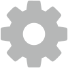

Solo App

DroneKit

3DR Services

Tower

DroneCode
We develop powerful, full-featured software that makes using a drone easy, fun and intuitive. We put our emphasis on providing the best possible user experience and a simple, efficient and pro-ready workflow.
Solo App
DroneKit
3DR Services
Tower
DroneCode
As the first major drone company to commit to open source development as a core value and business strategy, 3DR wants to use our platform and resources to enable and encourage innovation everywhere. We’ve learned that, in our hyper-connected world, moving fast means moving together. In this spirit, we keep huge parts of our platform open for developers anywhere to access and build upon. Ultimately these advancements will find their way to you, and like adding apps to your smartphone, your 3DR drone will keep getting better.
OPEN SOURCE POLICY